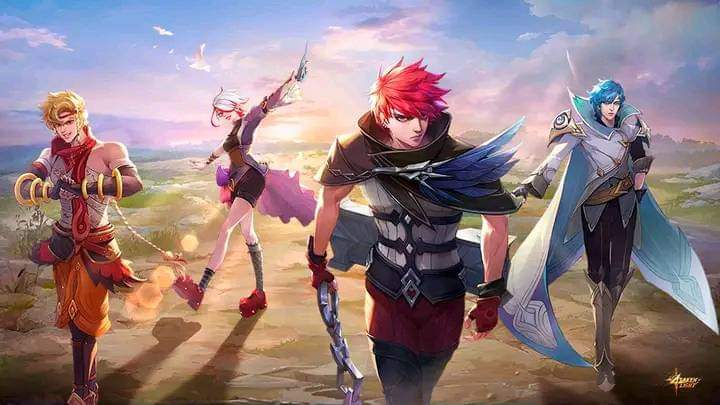

Aunque puedan parecer imperfectos estan unidos en su busqueda de la luz.

Incluso mientras esta poseido por un dios maligno, Yin se esfuerza al maximo para luchar por el control
de su mente y cuerpo utilizando su fuerza interior
Por fuera ,Melissa es una bala perdida,pero es tan fiel como la mayor aliada de las personas que considera amigas
Xavier,que paso una decada de lucha interna, finalmente se libera de este y enfrentarse a su corazon para seguir a la luz
Cuando julian se encontro con la verdad,este decidio levantarse para plantar frente a sus verdaderos enemigos y estar en
defensa de Forsaken Light